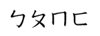
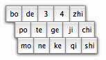

|
Aiya! is a brand new flashcard software that will help you learn the Chinese Zhuyin alphabet in a fun and easy way.
What is this bopomofo thing?
Bopomofo is the sounding of the first four characters in the Chinese alphabetical system formally known as Zhuyin. Zhuyin is taught to young kids in Taiwan before they learn their proper Chinese characters, it is printed next to Chinese characters in Children's books. It is also used by Taiwanese people to type Chinese into computers. It has advantages over the Romanised Chinese alphabetical system (Pinyin) that's used in Mainland China; since it saves you a lot of key strokes when typing Chinese into a Computer, and the fact that Pinyin attempts to represent Chinese sounds using Roman characters is just silly; since you wouldn't think that "qi" is supposed to be pronounced like "chi" would you?
How is Aiya! going to help me?
Aiya! is designed to work with you, it lets you select the lines you want to learn, so that you can gradually build up to all 37 characters in your own pace. It also features the ability to set time limit and word limit for each session.
Aiya! arranges all the Pinyin buttons in the way Zhuyin is arranged on a Zhuyin keyboard so that you can get to know where they are when you start typing Chinese using Zhuyin.
|
|
|